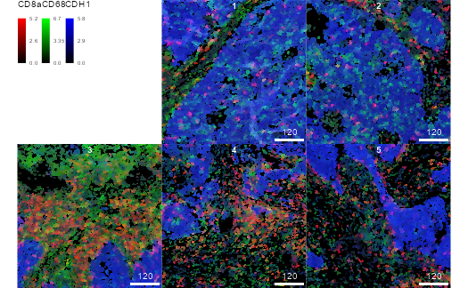
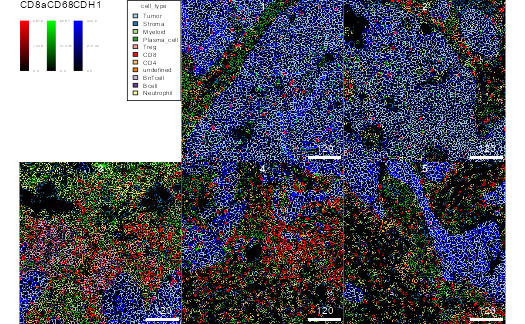

Accessing IMC datasets
Nicolas Damond
Department for Quantitative Biomedicine, University of Zurichnicolas.damond@dqbm.uzh.ch
Nils Eling
Department for Quantitative Biomedicine, University of Zurichnils.eling@dqbm.uzh.ch
Created: Nov 02, 2020; Compiled: 25 May 2021
Source:vignettes/imcdatasets.Rmd
imcdatasets.RmdIntroduction
The imcdatasets package provides access to publicly available datasets generated using imaging mass cytometry (IMC) (Giesen et al. 2014).
IMC is a technology that enables measurement of up to 50 markers from tissue sections at a resolution of 1 \(\mu m\) Giesen et al. (2014). In classical processing pipelines, such as the ImcSegmentationPipeline, the multichannel images are segmented to generate cells masks. These masks are then used to extract single cell features from the multichannel images.
Each dataset in imcdatasets is composed of three elements that can be retrieved separately:
1. Single-cell data in the form of a SingleCellExperiment class object (named XYZ_sce.rds).
2. Multichannel images in the form of a CytoImageList class object (named XYZ_images.rds).
3. Cell segmentation masks in the form of a CytoImageList class object (named XYZ_masks.rds).
Here, XYZ refers to the name of the dataset.
Available datasets
The listDatasets() function returns all available datasets in imcdatasets, along with associated information. The FunctionCall column gives the name of the R function that enables to load the dataset.
datasets <- listDatasets()
datasets <- as.data.frame(datasets)
datasets$FunctionCall <- sprintf("`%s`", datasets$FunctionCall)
knitr::kable(datasets)| Reference | Species | Tissue | NumberOfCells | NumberOfImages | NumberOfChannels | FunctionCall |
|---|---|---|---|---|---|---|
| Damond et al. (2019) | Human | Pancreas | 252059 | 100 | 38 | DamondPancreas2019Data() |
| Jackson et al. (2020) | Human | Primary breast tumour | 285851 | 100 | 42 | JacksonFischer2020Data() |
| (zanotellispheroids2020?) | Human | Cell line spheroids | 229047 | 517 | 51 | ZanotelliSpheroids2020Data() |
Retrieving data
Users can import the datasets by calling a single function and specifying the type of data to retrieve. The following examples highlight accessing the dataset provided by Damond, N. et al., A Map of Human Type 1 Diabetes Progression by Imaging Mass Cytometry (Damond et al. 2019).
Importing single-cell expression data and metadata
sce <- DamondPancreas2019Data(data_type = "sce")
sce## class: SingleCellExperiment
## dim: 38 252059
## metadata(0):
## assays(2): counts exprs
## rownames(38): H3 SMA ... Ir191 Ir193
## rowData names(15): TubeNb MetalTag ... miCAT2 miCAT
## colnames(252059): E02_1 E02_2 ... J34_1149 J34_1150
## colData names(26): slide id ... Ethnicity BMI
## reducedDimNames(0):
## mainExpName: NULL
## altExpNames(0):Importing multichannel images
images <- DamondPancreas2019Data(data_type = "images")
images## CytoImageList containing 100 image(s)
## names(100): E02_a0_full_clean E03_a0_full_clean E04_a0_full_clean E05_a0_full_clean E06_a0_full_clean E07_a0_full_clean E08_a0_full_clean E09_a0_full_clean E10_a0_full_clean E11_a0_full_clean E12_a0_full_clean E13_a0_full_clean E14_a0_full_clean E15_a0_full_clean E16_a0_full_clean E17_a0_full_clean E18_a0_full_clean E19_a0_full_clean E20_a0_full_clean E21_a0_full_clean E22_a0_full_clean E23_a0_full_clean E24_a0_full_clean E25_a0_full_clean E26_a0_full_clean E27_a0_full_clean E28_a0_full_clean E29_a0_full_clean E30_a0_full_clean E31_a0_full_clean E32_a0_full_clean E33_a0_full_clean E34_a0_full_clean G01_a0_full_clean G02_a0_full_clean G03_a0_full_clean G04_a0_full_clean G05_a0_full_clean G06_a0_full_clean G07_a0_full_clean G08_a0_full_clean G09_a0_full_clean G10_a0_full_clean G11_a0_full_clean G12_a0_full_clean G13_a0_full_clean G14_a0_full_clean G15_a0_full_clean G16_a0_full_clean G17_a0_full_clean G18_a0_full_clean G19_a0_full_clean G20_a0_full_clean G21_a0_full_clean G22_a0_full_clean G23_a0_full_clean G24_a0_full_clean G25_a0_full_clean G26_a0_full_clean G27_a0_full_clean G28_a0_full_clean G29_a0_full_clean G30_a0_full_clean G31_a0_full_clean G32_a0_full_clean G33_a0_full_clean J01_a0_full_clean J02_a0_full_clean J03_a0_full_clean J04_a0_full_clean J05_a0_full_clean J06_a0_full_clean J07_a0_full_clean J08_a0_full_clean J09_a0_full_clean J10_a0_full_clean J11_a0_full_clean J12_a0_full_clean J13_a0_full_clean J14_a0_full_clean J15_a0_full_clean J16_a0_full_clean J17_a0_full_clean J18_a0_full_clean J19_a0_full_clean J20_a0_full_clean J21_a0_full_clean J22_a0_full_clean J23_a0_full_clean J24_a0_full_clean J25_a0_full_clean J26_a0_full_clean J27_a0_full_clean J28_a0_full_clean J29_a0_full_clean J30_a0_full_clean J31_a0_full_clean J32_a0_full_clean J33_a0_full_clean J34_a0_full_clean
## Each image contains 38 channel(s)
## channelNames(38): H3 SMA INS CD38 CD44 PCSK2 CD99 CD68 MPO SLC2A1 CD20 AMY2A CD3e PPY PIN PD-1 GCG PDX1 SST SYP KRT19 CD45 FOXP3 CD45RA CD8a CA9 IAPP KI-67 NKX6-1 pH3 CD4 CD31 CDH PTPRN pRB cPARP1 Ir191 Ir193Importing cell segmentation masks
masks <- DamondPancreas2019Data(data_type = "masks")
masks## CytoImageList containing 100 image(s)
## names(100): E02_a0_full_mask E03_a0_full_mask E04_a0_full_mask E05_a0_full_mask E06_a0_full_mask E07_a0_full_mask E08_a0_full_mask E09_a0_full_mask E10_a0_full_mask E11_a0_full_mask E12_a0_full_mask E13_a0_full_mask E14_a0_full_mask E15_a0_full_mask E16_a0_full_mask E17_a0_full_mask E18_a0_full_mask E19_a0_full_mask E20_a0_full_mask E21_a0_full_mask E22_a0_full_mask E23_a0_full_mask E24_a0_full_mask E25_a0_full_mask E26_a0_full_mask E27_a0_full_mask E28_a0_full_mask E29_a0_full_mask E30_a0_full_mask E31_a0_full_mask E32_a0_full_mask E33_a0_full_mask E34_a0_full_mask G01_a0_full_mask G02_a0_full_mask G03_a0_full_mask G04_a0_full_mask G05_a0_full_mask G06_a0_full_mask G07_a0_full_mask G08_a0_full_mask G09_a0_full_mask G10_a0_full_mask G11_a0_full_mask G12_a0_full_mask G13_a0_full_mask G14_a0_full_mask G15_a0_full_mask G16_a0_full_mask G17_a0_full_mask G18_a0_full_mask G19_a0_full_mask G20_a0_full_mask G21_a0_full_mask G22_a0_full_mask G23_a0_full_mask G24_a0_full_mask G25_a0_full_mask G26_a0_full_mask G27_a0_full_mask G28_a0_full_mask G29_a0_full_mask G30_a0_full_mask G31_a0_full_mask G32_a0_full_mask G33_a0_full_mask J01_a0_full_mask J02_a0_full_mask J03_a0_full_mask J04_a0_full_mask J05_a0_full_mask J06_a0_full_mask J07_a0_full_mask J08_a0_full_mask J09_a0_full_mask J10_a0_full_mask J11_a0_full_mask J12_a0_full_mask J13_a0_full_mask J14_a0_full_mask J15_a0_full_mask J16_a0_full_mask J17_a0_full_mask J18_a0_full_mask J19_a0_full_mask J20_a0_full_mask J21_a0_full_mask J22_a0_full_mask J23_a0_full_mask J24_a0_full_mask J25_a0_full_mask J26_a0_full_mask J27_a0_full_mask J28_a0_full_mask J29_a0_full_mask J30_a0_full_mask J31_a0_full_mask J32_a0_full_mask J33_a0_full_mask J34_a0_full_mask
## Each image contains 1 channelOn disk storage
Objects containing multi-channel images and segmentation masks can furthermore be stored on disk rather than in memory. Nevertheless, they need to be loaded into memory once before writing them to disk. This process takes longer than keeping them in memory but reduces memory requirements during downstream analysis.
To write images or masks to disk, set on_disk = TRUE and specify a path where images/masks will be stored as .h5 files:
# Create temporary location
cur_path <- tempdir()
masks <- DamondPancreas2019Data(data_type = "masks", on_disk = TRUE,
h5FilesPath = cur_path)
masks## CytoImageList containing 100 image(s)
## names(100): E02_a0_full_mask E03_a0_full_mask E04_a0_full_mask E05_a0_full_mask E06_a0_full_mask E07_a0_full_mask E08_a0_full_mask E09_a0_full_mask E10_a0_full_mask E11_a0_full_mask E12_a0_full_mask E13_a0_full_mask E14_a0_full_mask E15_a0_full_mask E16_a0_full_mask E17_a0_full_mask E18_a0_full_mask E19_a0_full_mask E20_a0_full_mask E21_a0_full_mask E22_a0_full_mask E23_a0_full_mask E24_a0_full_mask E25_a0_full_mask E26_a0_full_mask E27_a0_full_mask E28_a0_full_mask E29_a0_full_mask E30_a0_full_mask E31_a0_full_mask E32_a0_full_mask E33_a0_full_mask E34_a0_full_mask G01_a0_full_mask G02_a0_full_mask G03_a0_full_mask G04_a0_full_mask G05_a0_full_mask G06_a0_full_mask G07_a0_full_mask G08_a0_full_mask G09_a0_full_mask G10_a0_full_mask G11_a0_full_mask G12_a0_full_mask G13_a0_full_mask G14_a0_full_mask G15_a0_full_mask G16_a0_full_mask G17_a0_full_mask G18_a0_full_mask G19_a0_full_mask G20_a0_full_mask G21_a0_full_mask G22_a0_full_mask G23_a0_full_mask G24_a0_full_mask G25_a0_full_mask G26_a0_full_mask G27_a0_full_mask G28_a0_full_mask G29_a0_full_mask G30_a0_full_mask G31_a0_full_mask G32_a0_full_mask G33_a0_full_mask J01_a0_full_mask J02_a0_full_mask J03_a0_full_mask J04_a0_full_mask J05_a0_full_mask J06_a0_full_mask J07_a0_full_mask J08_a0_full_mask J09_a0_full_mask J10_a0_full_mask J11_a0_full_mask J12_a0_full_mask J13_a0_full_mask J14_a0_full_mask J15_a0_full_mask J16_a0_full_mask J17_a0_full_mask J18_a0_full_mask J19_a0_full_mask J20_a0_full_mask J21_a0_full_mask J22_a0_full_mask J23_a0_full_mask J24_a0_full_mask J25_a0_full_mask J26_a0_full_mask J27_a0_full_mask J28_a0_full_mask J29_a0_full_mask J30_a0_full_mask J31_a0_full_mask J32_a0_full_mask J33_a0_full_mask J34_a0_full_mask
## Each image contains 1 channelAccessing data objects by name
Alternately, data objects can be imported using their name as a function:
sce <- DamondPancreas2019_sce()
sce## class: SingleCellExperiment
## dim: 38 252059
## metadata(0):
## assays(2): counts exprs
## rownames(38): H3 SMA ... Ir191 Ir193
## rowData names(15): TubeNb MetalTag ... miCAT2 miCAT
## colnames(252059): E02_1 E02_2 ... J34_1149 J34_1150
## colData names(26): slide id ... Ethnicity BMI
## reducedDimNames(0):
## mainExpName: NULL
## altExpNames(0):
images <- DamondPancreas2019_images()
images## CytoImageList containing 100 image(s)
## names(100): E02_a0_full_clean E03_a0_full_clean E04_a0_full_clean E05_a0_full_clean E06_a0_full_clean E07_a0_full_clean E08_a0_full_clean E09_a0_full_clean E10_a0_full_clean E11_a0_full_clean E12_a0_full_clean E13_a0_full_clean E14_a0_full_clean E15_a0_full_clean E16_a0_full_clean E17_a0_full_clean E18_a0_full_clean E19_a0_full_clean E20_a0_full_clean E21_a0_full_clean E22_a0_full_clean E23_a0_full_clean E24_a0_full_clean E25_a0_full_clean E26_a0_full_clean E27_a0_full_clean E28_a0_full_clean E29_a0_full_clean E30_a0_full_clean E31_a0_full_clean E32_a0_full_clean E33_a0_full_clean E34_a0_full_clean G01_a0_full_clean G02_a0_full_clean G03_a0_full_clean G04_a0_full_clean G05_a0_full_clean G06_a0_full_clean G07_a0_full_clean G08_a0_full_clean G09_a0_full_clean G10_a0_full_clean G11_a0_full_clean G12_a0_full_clean G13_a0_full_clean G14_a0_full_clean G15_a0_full_clean G16_a0_full_clean G17_a0_full_clean G18_a0_full_clean G19_a0_full_clean G20_a0_full_clean G21_a0_full_clean G22_a0_full_clean G23_a0_full_clean G24_a0_full_clean G25_a0_full_clean G26_a0_full_clean G27_a0_full_clean G28_a0_full_clean G29_a0_full_clean G30_a0_full_clean G31_a0_full_clean G32_a0_full_clean G33_a0_full_clean J01_a0_full_clean J02_a0_full_clean J03_a0_full_clean J04_a0_full_clean J05_a0_full_clean J06_a0_full_clean J07_a0_full_clean J08_a0_full_clean J09_a0_full_clean J10_a0_full_clean J11_a0_full_clean J12_a0_full_clean J13_a0_full_clean J14_a0_full_clean J15_a0_full_clean J16_a0_full_clean J17_a0_full_clean J18_a0_full_clean J19_a0_full_clean J20_a0_full_clean J21_a0_full_clean J22_a0_full_clean J23_a0_full_clean J24_a0_full_clean J25_a0_full_clean J26_a0_full_clean J27_a0_full_clean J28_a0_full_clean J29_a0_full_clean J30_a0_full_clean J31_a0_full_clean J32_a0_full_clean J33_a0_full_clean J34_a0_full_clean
## Each image contains 38 channel(s)
## channelNames(38): H3 SMA INS CD38 CD44 PCSK2 CD99 CD68 MPO SLC2A1 CD20 AMY2A CD3e PPY PIN PD-1 GCG PDX1 SST SYP KRT19 CD45 FOXP3 CD45RA CD8a CA9 IAPP KI-67 NKX6-1 pH3 CD4 CD31 CDH PTPRN pRB cPARP1 Ir191 Ir193
masks <- DamondPancreas2019_masks()
masks## CytoImageList containing 100 image(s)
## names(100): E02_a0_full_mask E03_a0_full_mask E04_a0_full_mask E05_a0_full_mask E06_a0_full_mask E07_a0_full_mask E08_a0_full_mask E09_a0_full_mask E10_a0_full_mask E11_a0_full_mask E12_a0_full_mask E13_a0_full_mask E14_a0_full_mask E15_a0_full_mask E16_a0_full_mask E17_a0_full_mask E18_a0_full_mask E19_a0_full_mask E20_a0_full_mask E21_a0_full_mask E22_a0_full_mask E23_a0_full_mask E24_a0_full_mask E25_a0_full_mask E26_a0_full_mask E27_a0_full_mask E28_a0_full_mask E29_a0_full_mask E30_a0_full_mask E31_a0_full_mask E32_a0_full_mask E33_a0_full_mask E34_a0_full_mask G01_a0_full_mask G02_a0_full_mask G03_a0_full_mask G04_a0_full_mask G05_a0_full_mask G06_a0_full_mask G07_a0_full_mask G08_a0_full_mask G09_a0_full_mask G10_a0_full_mask G11_a0_full_mask G12_a0_full_mask G13_a0_full_mask G14_a0_full_mask G15_a0_full_mask G16_a0_full_mask G17_a0_full_mask G18_a0_full_mask G19_a0_full_mask G20_a0_full_mask G21_a0_full_mask G22_a0_full_mask G23_a0_full_mask G24_a0_full_mask G25_a0_full_mask G26_a0_full_mask G27_a0_full_mask G28_a0_full_mask G29_a0_full_mask G30_a0_full_mask G31_a0_full_mask G32_a0_full_mask G33_a0_full_mask J01_a0_full_mask J02_a0_full_mask J03_a0_full_mask J04_a0_full_mask J05_a0_full_mask J06_a0_full_mask J07_a0_full_mask J08_a0_full_mask J09_a0_full_mask J10_a0_full_mask J11_a0_full_mask J12_a0_full_mask J13_a0_full_mask J14_a0_full_mask J15_a0_full_mask J16_a0_full_mask J17_a0_full_mask J18_a0_full_mask J19_a0_full_mask J20_a0_full_mask J21_a0_full_mask J22_a0_full_mask J23_a0_full_mask J24_a0_full_mask J25_a0_full_mask J26_a0_full_mask J27_a0_full_mask J28_a0_full_mask J29_a0_full_mask J30_a0_full_mask J31_a0_full_mask J32_a0_full_mask J33_a0_full_mask J34_a0_full_mask
## Each image contains 1 channelDataset info and metadata
Additional information about each dataset is available in the help page:
?DamondPancreas2019DataThe metadata associated with a specific data object can be displayed as follows:
DamondPancreas2019_sce(metadata = TRUE)## ExperimentHub with 1 record
## # snapshotDate(): 2021-05-05
## # names(): EH3910
## # package(): imcdatasets
## # $dataprovider: University of Zurich
## # $species: Homo sapiens
## # $rdataclass: SingleCellExperiment
## # $rdatadateadded: 2020-11-06
## # $title: DamondPancreas2019_sce
## # $description: Single cell data for the DamondPancreas2019 imaging mass cyt...
## # $taxonomyid: 9606
## # $genome: NA
## # $sourcetype: Zip
## # $sourceurl: http://dx.doi.org/10.17632/cydmwsfztj.2
## # $sourcesize: NA
## # $tags: c("ExperimentHub", "SingleCellData", "TechnologyData",
## # "Tissue")
## # retrieve record with 'object[["EH3910"]]'
DamondPancreas2019_images(metadata = TRUE)## ExperimentHub with 1 record
## # snapshotDate(): 2021-05-05
## # names(): EH3911
## # package(): imcdatasets
## # $dataprovider: University of Zurich
## # $species: Homo sapiens
## # $rdataclass: CytoImageList
## # $rdatadateadded: 2020-11-06
## # $title: DamondPancreas2019_images
## # $description: Multichannel images for the DamondPancreas2019 imaging mass ...
## # $taxonomyid: 9606
## # $genome: NA
## # $sourcetype: Zip
## # $sourceurl: http://dx.doi.org/10.17632/cydmwsfztj.2
## # $sourcesize: NA
## # $tags: c("ExperimentHub", "SingleCellData", "TechnologyData",
## # "Tissue")
## # retrieve record with 'object[["EH3911"]]'
DamondPancreas2019_masks(metadata = TRUE)## ExperimentHub with 1 record
## # snapshotDate(): 2021-05-05
## # names(): EH3912
## # package(): imcdatasets
## # $dataprovider: University of Zurich
## # $species: Homo sapiens
## # $rdataclass: CytoImageList
## # $rdatadateadded: 2020-11-06
## # $title: DamondPancreas2019_masks
## # $description: Cell masks for the DamondPancreas2019 imaging mass cytometry...
## # $taxonomyid: 9606
## # $genome: NA
## # $sourcetype: Zip
## # $sourceurl: http://dx.doi.org/10.17632/cydmwsfztj.2
## # $sourcesize: NA
## # $tags: c("ExperimentHub", "SingleCellData", "TechnologyData",
## # "Tissue")
## # retrieve record with 'object[["EH3912"]]'Usage
The SingleCellExperiment class objects can be used for data analysis. For more information, please refer to the SingleCellExperiment package and to the Orchestrating Single-Cell Analysis with Bioconductor workflow.
The CytoImageList class objects can be used for plotting cell and pixel information. Some typical use cases are given below. For more information, please see the cytomapper package and the associated vignette .
Subsetting the images and masks
cur_images <- images[1:5]
cur_masks <- masks[1:5]Plotting pixel information
The images objects can be used to display pixel-level data.
plotPixels(
cur_images,
colour_by = c("CDH", "CD99", "H3"),
bcg = list(
CD99 = c(0,2,1),
CDH = c(0,8,1),
H3 = c(0,5,1)
)
)
Plotting cell information
The masks and sce objects can be combined to display cell-level data.
plotCells(
cur_masks, object = sce,
img_id = "ImageNumber", cell_id = "CellNumber",
colour_by = c("CD8a", "PIN"),
exprs_values = "exprs"
)
Outlining cells on images
Cell information can be displayed on top of images by combining the images, masks and sce objects.
plotPixels(
cur_images, mask = cur_masks, object = sce,
img_id = "ImageNumber", cell_id = "CellNumber",
outline_by = "CellType",
colour_by = c("H3", "CD99", "CDH"),
bcg = list(
CD99 = c(0,2,1),
CDH = c(0,8,1),
H3 = c(0,5,1)
)
)
Session info
## R Under development (unstable) (2021-01-25 r79878)
## Platform: x86_64-pc-linux-gnu (64-bit)
## Running under: Ubuntu 18.04.5 LTS
##
## Matrix products: default
## BLAS: /usr/local/lib/R/lib/libRblas.so
## LAPACK: /usr/local/lib/R/lib/libRlapack.so
##
## locale:
## [1] LC_CTYPE=C.UTF-8 LC_NUMERIC=C LC_TIME=C.UTF-8
## [4] LC_COLLATE=C.UTF-8 LC_MONETARY=C.UTF-8 LC_MESSAGES=C.UTF-8
## [7] LC_PAPER=C.UTF-8 LC_NAME=C LC_ADDRESS=C
## [10] LC_TELEPHONE=C LC_MEASUREMENT=C.UTF-8 LC_IDENTIFICATION=C
##
## attached base packages:
## [1] parallel stats4 stats graphics grDevices utils datasets
## [8] methods base
##
## other attached packages:
## [1] imcdatasets_1.1.0 cytomapper_1.5.1
## [3] SingleCellExperiment_1.15.1 SummarizedExperiment_1.23.0
## [5] Biobase_2.53.0 GenomicRanges_1.45.0
## [7] GenomeInfoDb_1.29.0 IRanges_2.27.0
## [9] S4Vectors_0.31.0 BiocGenerics_0.39.0
## [11] MatrixGenerics_1.5.0 matrixStats_0.58.0
## [13] EBImage_4.35.0 BiocStyle_2.21.0
##
## loaded via a namespace (and not attached):
## [1] ggbeeswarm_0.6.0 colorspace_2.0-1
## [3] ellipsis_0.3.2 rprojroot_2.0.2
## [5] XVector_0.33.0 fftwtools_0.9-11
## [7] fs_1.5.0 bit64_4.0.5
## [9] AnnotationDbi_1.55.0 interactiveDisplayBase_1.31.0
## [11] fansi_0.5.0 codetools_0.2-18
## [13] cachem_1.0.5 knitr_1.33
## [15] jsonlite_1.7.2 dbplyr_2.1.1
## [17] png_0.1-7 shinydashboard_0.7.1
## [19] shiny_1.6.0 HDF5Array_1.21.0
## [21] httr_1.4.2 BiocManager_1.30.15
## [23] compiler_4.1.0 assertthat_0.2.1
## [25] Matrix_1.3-3 fastmap_1.1.0
## [27] svgPanZoom_0.3.4 later_1.2.0
## [29] htmltools_0.5.1.1 tools_4.1.0
## [31] gtable_0.3.0 glue_1.4.2
## [33] GenomeInfoDbData_1.2.6 dplyr_1.0.6
## [35] rappdirs_0.3.3 Rcpp_1.0.6
## [37] jquerylib_0.1.4 pkgdown_1.6.1
## [39] raster_3.4-10 Biostrings_2.61.0
## [41] vctrs_0.3.8 rhdf5filters_1.5.0
## [43] svglite_2.0.0 ExperimentHub_2.1.0
## [45] xfun_0.23 stringr_1.4.0
## [47] mime_0.10 lifecycle_1.0.0
## [49] AnnotationHub_3.1.0 zlibbioc_1.39.0
## [51] scales_1.1.1 ragg_1.1.2
## [53] promises_1.2.0.1 rhdf5_2.37.0
## [55] RColorBrewer_1.1-2 curl_4.3.1
## [57] yaml_2.2.1 memoise_2.0.0
## [59] gridExtra_2.3 ggplot2_3.3.3
## [61] sass_0.4.0 stringi_1.6.2
## [63] RSQLite_2.2.7 highr_0.9
## [65] BiocVersion_3.14.0 desc_1.3.0
## [67] tiff_0.1-8 filelock_1.0.2
## [69] BiocParallel_1.27.0 rlang_0.4.11
## [71] pkgconfig_2.0.3 systemfonts_1.0.2
## [73] bitops_1.0-7 evaluate_0.14
## [75] lattice_0.20-44 purrr_0.3.4
## [77] Rhdf5lib_1.15.0 htmlwidgets_1.5.3
## [79] bit_4.0.4 tidyselect_1.1.1
## [81] magrittr_2.0.1 bookdown_0.22
## [83] R6_2.5.0 generics_0.1.0
## [85] DelayedArray_0.19.0 DBI_1.1.1
## [87] withr_2.4.2 pillar_1.6.1
## [89] KEGGREST_1.33.0 abind_1.4-5
## [91] RCurl_1.98-1.3 sp_1.4-5
## [93] tibble_3.1.2 crayon_1.4.1
## [95] utf8_1.2.1 BiocFileCache_2.1.0
## [97] rmarkdown_2.8 viridis_0.6.1
## [99] jpeg_0.1-8.1 locfit_1.5-9.4
## [101] grid_4.1.0 blob_1.2.1
## [103] digest_0.6.27 xtable_1.8-4
## [105] httpuv_1.6.1 textshaping_0.3.4
## [107] munsell_0.5.0 beeswarm_0.3.1
## [109] viridisLite_0.4.0 vipor_0.4.5
## [111] bslib_0.2.5.1